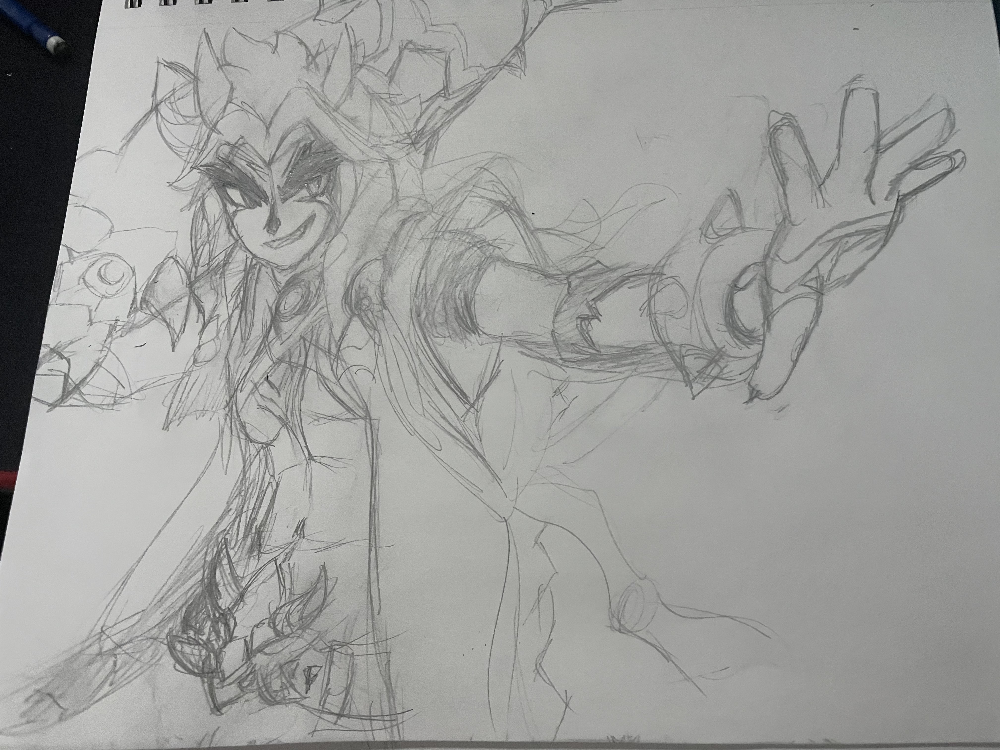
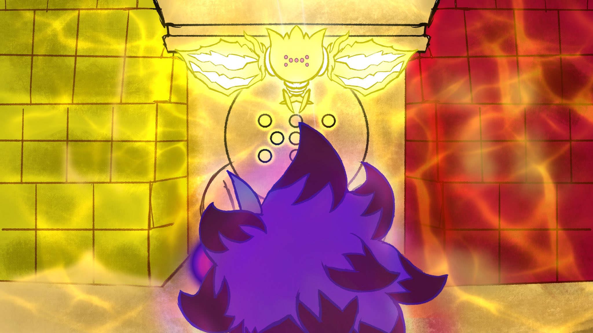

Nolan McDowell is a first-year bilingual student in the Multimedia Production Program focused on graphic design and is a self-taught artist focused mainly on character design. He enjoys drawing characters and playing video games because he aspires to become a content creator as an artist or as a streamer.
He’s enjoyed drawing for the longest time, inspired by video games when he was younger, broadening from traditional drawing towards digital art on an iPad. He is most inspired by the video games and anime which he grew up with.

Nolan graduated from Catholic Central Highschool with a French Language Arts Diploma, on top of his regular high school diploma in 2020. He often enjoys listening to soundtracks from either video games or movies and enjoys listening to them while playing games or drawing. He’s been drawing since the third grade, often posting what he draws nowadays on Twitter.
What really inspires Nolan asides from media is his high school art teacher Mr. Hogan. This teacher inspired Nolan as when he is freely able to work on something, it is when you will find him the happiest.